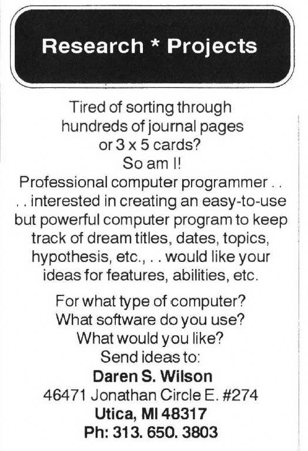
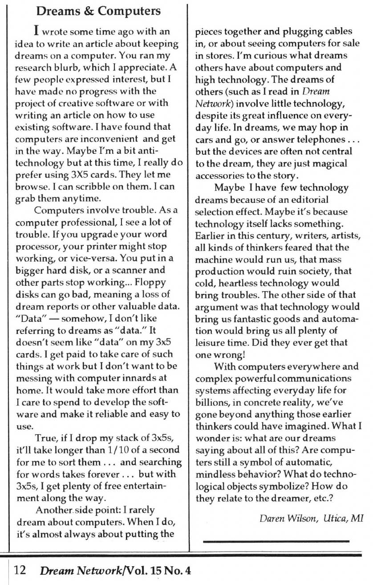

The following exchange took place in the Dream Network Journal starting with the initial classified in Issue 12.4 (1993), and continuing with Daren Wilson's letter the editor (15.4, 1996), and a follow-up letter from Joy Gates (16.1, 1997)
Classified, Issue 12.4 (1993)

Letter to the editor, Issue 15.4 (1996)

'Dreams & Computers' by Daren Wilson
I wrote some time ago with an idea to write an article about keeping dreams on a computer. You ran my research blurb, which I appreciate. A few people expressed interest, but I have made no progress with the project of creative software or with writing an article on how to use existing software. I have found that computers are inconvenient and get in the way. Maybe I'm a bit antitechnology but at this time, I really do prefer using 3x5 cards. They let me browse. I can scribble on them. I can grab them anytime.
Computers involve trouble. As a computer professional, I see a lot of trouble. If you upgrade your word processor, your printer might stop working, or vice-versa. You put in a bigger hard disk, or a scanner and other parts stop working... Floppy disks can go bad, meaning a loss of dream reports or other valuable data. "Data" - somehow, I don't like referring to dreams as "data". It doesn't seem like "data" on my 3x5 cards. I get paid to take care of such things at work but I don't want to be messing with computer innards at home. It would take more effort than I care to spend to develop the software and make it reliable and easy to use.
True, if I drop my stack of 3x5s, it'll take longer than 1/10 of a second for me to sort them... and searching for words takes forever... but with 3x5s, I get plenty of free entertainment along the way.
Another side point: I rarely dream about computers. When I do, it's almost always about putting the pieces together and plugging cables in, or about seeing computers for sale in stores. I'm curious what dreams others have about computers and high technology. The dreams of others (such as I read in Dream Network) involve little technology, despite its great influence on everyday life. In dreams, we may hop in cars and go, or answer telephones... but the devices are often not central to the dream, they are just magical accessories to the story. Maybe I have few technology dreams because of an editorial selection effect. Maybe it's because technology itself lacks something. Earlier in this century, writers, artists, all kinds of thinkers feared that the machine would run us, that mass production would ruin society, that cold, heartless technology would bring troubles. The other side of that argument was that technology would bring us fantastic goods and automation would bring us all plenty of leisure time. Did they ever get that one wrong!
With computers everywhere and complex powerful communications systems affecting everyday life for billions, in concrete reality, we've gone beyond anything those earlier thinkers could have imagined. What I wonder is: what are our dreams saying about all of this? Are computers still a symbol of automatic, mindless behavior? What do technological objects symbolize? How do they relate to the dreamer, etc.?
Daren Wilson, Utica, MI
Letter to the editor, 'Dreaming On-Line', Issue 16.1 (1996)
I write in response to Daren Wilson's letter (DNJ, Vol.15 No.4) in which he said, "I'm curious what dreams others have about computers and high technology", I wish to share these two recent dreams which are strongly computer related, although not to the material, technological object per se, but rather to the energy and force we can connect with via the computer. My first dream arrives after I have studied a book about how to utilize the amenities of a certain large on-line computer service and how to tweak the software configurations:
All night long I am an energy unit flowing, pulsing, moving through the cyberspace of a large on-line service. This is an alternate reality to being human - there is no "I", only living energy units moving with living energy units in a glorious rhythmic progression in a vast living being.
From this dream I realize that, from one point of view, an on-line service is a symbol and metaphor for an evolutionary bridging toward telepathy. My experience that an overseeing organizing energy constellates a large on-line service - in a way more potent and powerful and dear than a local provider can - has presented a view of an on-line service as energy and force, beyond the aspect of commercialism or monopoly or any of that human judgment stuff. On a sheer energy level, this is a potent living energy being... a type of deva. This has been my experience in my dream life.
In another dream a few weeks later...
I am a living energy unit moving among countless other such on an online service, this time in the Message Boards. As we all flow and pulsate (like blood cells) along swift currents and channels, we also intermingle and join in various changing combinations. As we do so, joyous energy is released which also becomes part of what we flow through. We are continually reconfiguring this energy as we are continually being changed by it. The ambiance is charged with vital meaning and joyous sharing.
This is my response to starting a message board in (the on-line service). I love the feeling of touching on a "snapshot" of another's process in the various categories of the whole spectrum of the message boards. They provide sharing at a pace easy to accommodate and still give the feel of a living process.
It is my experience that when we regard all substance and matter as being alive that we are able to access an alternate and deeper, more meaningful level in life (and technology) and in our dreams.
Joy Gates, Ashville, N.C.